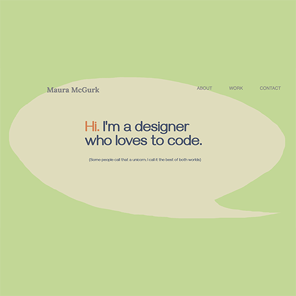

Web Design Portfolio
This static page was expanded from a class exercise in HTML and CSS.
The original class exercise featured a large “hero” image with a desk, cup of coffee, laptop, and cactus…all in tasteful white and neutral colors…all very trendy, as far as portfolio sites go these days)…but very sterile to my taste because it looks like a stock photo. And that doesn’t look like my desk (but that’s another story)!

My goal was to make the project my own by conveying a more personal feel. In contrast to the clean, white desk (which, to me, doesn’t look like a place where real work gets done!), I wanted to go a step farther, and even reach out to visitors/potential clients at the soonest possible moment.
I responded by creating a handmade hero image. I chose the chat bubble as the main visual element because it seemed personal and relatable, maybe even friendly or kind. It also provides the conversational opener, as if I’m literally speaking with visitors, along with the introductory text (and a small joke, which I couldn’t resist).
I really believe that technology doesn’t need to feel inhuman, and I want to convey an openness and ease, in both my design and interpersonal styles.